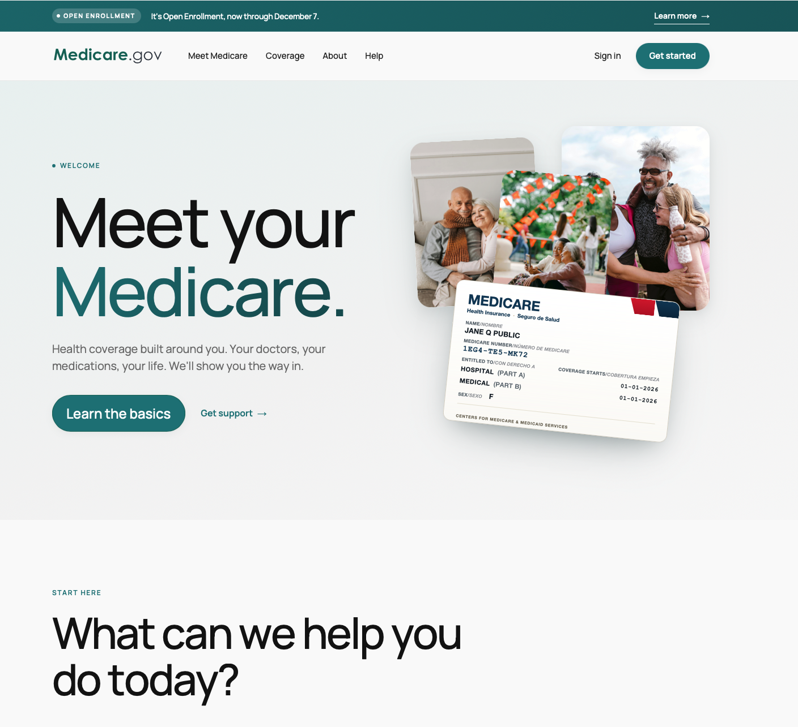

Medicare
Service design · Guided experience · Interactive prototype
I cut Medicare signup from 35 steps to 5
The National Design Studio recruited me to work on Medicare. Together, we built the signup flow around five questions about each person’s situation. Their answers guided what they saw next.
What the interviews changed
In other products, I’d often aimed for fewer words on screen and a faster path through signup. In-depth interviews with people preparing to enroll in Medicare made me rethink both goals. A question about existing coverage takes only a moment to read, yet it can leave someone wondering which coverage counts and what their answer will change.
That changed what we kept on screen. People could look back at an earlier answer, change it, and see how their next steps changed. We put help beside each question so they could pause for an explanation and pick up where they left off.
On Instagram
It was cool to see the work get attention from @atlasberry008 and others. All the teams had shared ideas and design patterns along the way, so it was awesome to see them show up on the big screen.
Try the guided experience
At any question, choose “Ask about this” to open the guide or “Listen” to hear the question and why it matters.
Portfolio prototype with sample plans, prices, and guidance—not medical, insurance, or enrollment advice. Please use fictional answers. No application is submitted.
Scroll inside the prototype to explore. Open full screen for a larger workspace. The contextual guide uses scripted sample responses; it is not a live AI service.
Help at every step
AI chat beside each question
We added AI chat at every step. When the form asked about health coverage through a job, for example, someone could ask whether COBRA counted. The guide already knew which question they were on, so they could ask in their own words and use the explanation to answer.
Hear the question and why it matters
We added an audio option for people who are blind or have low vision. Choosing “Listen” reads the question aloud along with the reason we’re asking it. Someone hearing a question about timing gets the same context as someone reading the screen, and can replay it before deciding how to answer.
